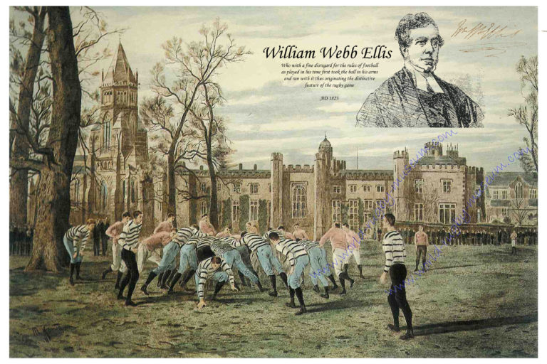
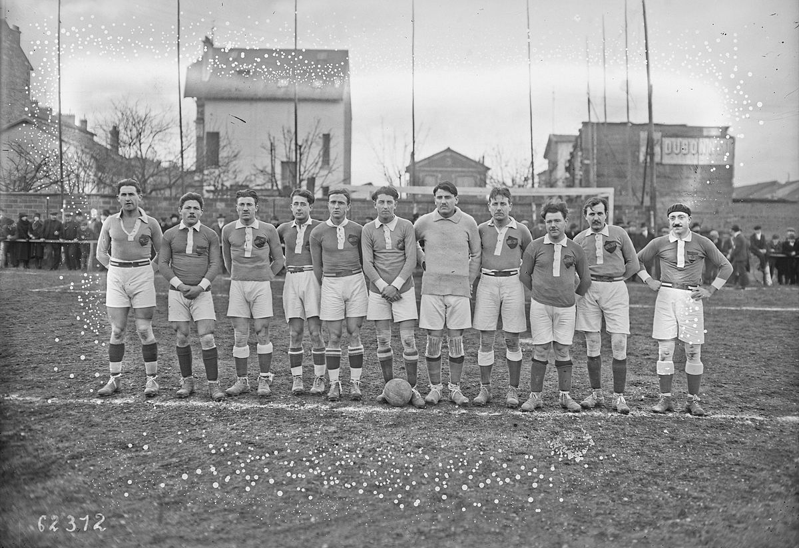
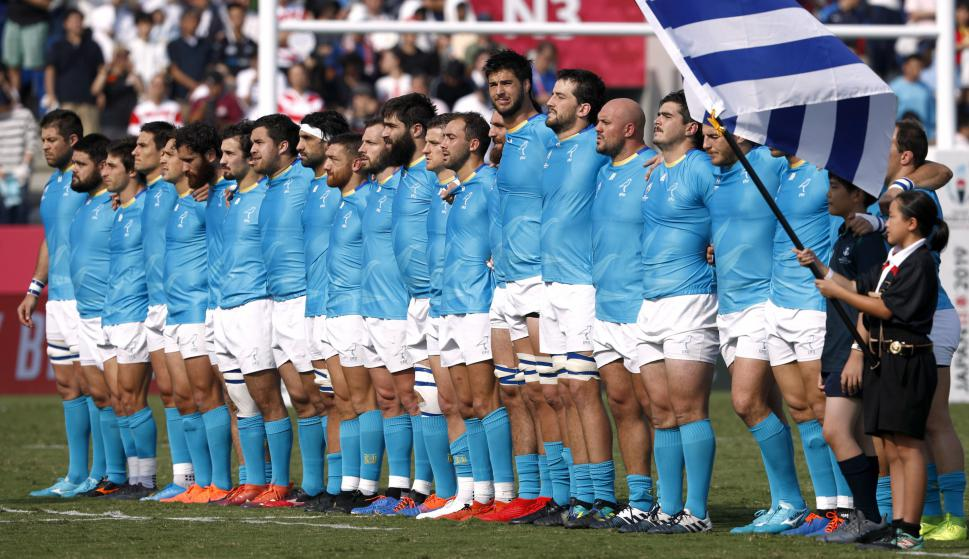

Cuenta la leyenda que en Inglaterra en el año 1823 un estudiante llamado William Webb Ellis de la Rugby School jugando fútbol tomó la pelota con sus manos y la llevó corriendo hasta el arco contrario. Desde entonces se comenzó a jugar el deporte, por supuesto que ha ido evolucionando hasta llegar a lo que hoy conocemos.

En 1871 se fundó la Rugby Football Union y en este mismo año se realizó un primer reglamento pues ya se había difundido la práctica de este deporte especialmente en las universidades y escuelas y a partir de 1872 se comenzaron a realizar eventos anuales entre Cambridge y Oxford, salvo durante la Primera Guerra Mundial.
A fines del Siglo XIX se estableció el Torneo de las Cinco Naciones: Escocia, Irlanda, Inglaterra, Gales y Francia. En 1908 el rugby se incluyó en los Juegos Olímpicos, y posteriormente en 1920 y 1924, (en ambos años E.E.U.U. ganó la medalla de oro).

{kind=link}
En 1954 se realizaron los primeros campeonatos de la FIRA (ahora llamada Rugby Europe), en los que tomaron parte Francia, Italia y España. Éstos no volvieron a celebrarse hasta 1965-1966, pero a partir de esta fecha se realizan anualmente.
Durante la segunda mitad del siglo XX se han desarrollado numerosas técnicas y teorías sobre cómo jugar mejor al rugby y se ha difundido el juego en varios países del mundo.
Dos siglos después, el rugby ha evolucionado hasta convertirse en uno de los deportes más populares del mundo, con millones de personas jugando, mirando y disfrutando del juego. En el corazón del rugby está el espíritu único que se ha mantenido a lo largo de los años. El rugby no sólo se juega ajustándose a las leyes sino también dentro del espíritu de las leyes. Mediante la disciplina, el control y el respeto mutuo se forja una fraternidad y sentido de juego limpio que define al rugby como el juego que es. Desde el terreno de juego de aquel colegio hasta la final de la copa del mundo, el rugby ofrece una experiencia verdaderamente única y totalmente reconfortante para todos los participantes en el juego.
En 2009 las uniones miembros del IRB (International Rugby Board) determinaron que las características que definen al rugby son:
- Integridad
- Pasión
- Solidaridad
- Disciplina
- Respeto
Estos se conocen ahora como los valores centrales del IRB y se han incorporado al documento del juego, un documento que tiene como finalidad garantizar que el rugby mantenga su carácter único tanto dentro como fuera del campo de juego.
El rugby en Uruguay
A mediados del siglo XIX los inmigrantes ingleses trajeron el rugby a Uruguay. El pionero fue el Montevideo Cricket Club institución que fue fundada en 1861
En 1950 se jugó el primer campeonato de rugby en el Uruguay, con la participación de cinco equipos: Montevideo Cricket Club, Carrasco Polo (que presentó dos equipos), Old Boys y Colonia Rugby. El campeonato fue para Old Boys y gracias a la aceptación que tuvo el evento se creó la Unión de Rugby en enero del siguiente año. Posteriormente a este campeonato se sumaron otros equipos como Trouville, Cuervos, Old Christians, Trebol, Champañat y Pucaru.

Sitio web de la Unión de Rugby del Uruguay